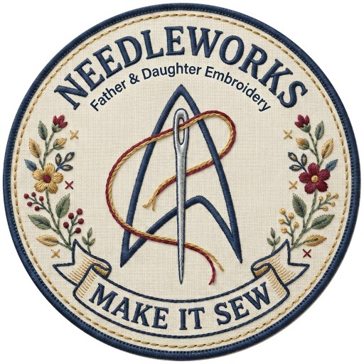
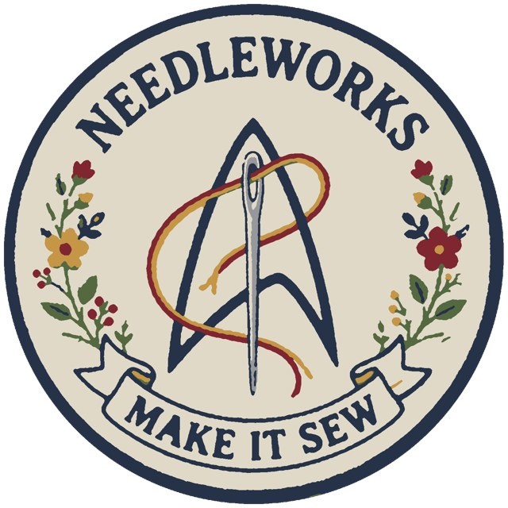

Make it sew: preparing a picture for machine embroidery
What we learned turning customers' logos into stitch files for a Brother PE900, written so a person or an AI image tool can follow it. A picture that follows these rules sews cleanly; one that doesn't will look fine on screen and sew badly.
Use this page in a prompt
Attach your picture to an AI chat or image tool and paste this. It prepares the art. Then open the prepared picture in Needleworks to get the PES file.
Prepare the attached image for machine embroidery, following every rule on this page: https://4gables.com/needleworks/guide.html It will be sewn about [size] mm across on a Brother PE900 ([4x4 or 5x7] hoop). Give me back one flat PNG at 1024 px or more. List any word or detail you had to enlarge or drop, and why.
Why not ask the AI for the PES file itself?
A general AI writes stitch files with generic code. In our tests that code put the PES design box in the wrong place, which makes a PE900 sew the design shifted and cut off. It also packed up to 79 needle hits into one square millimetre, where sold designs stay at or under 24, and left up to 16 % of stitches under 0.3 mm. Those stitches break thread and nest. Rules on a page can't fix how a program stitches. Use a program built and tested for the machine.
Decide the sewn size first
Every other rule depends on it. Words and fine lines that read on screen can be thinner than the thread at the size you sew.
| Hoop (PE900) | Sewing field | Largest design (2 mm margin) |
|---|---|---|
| 4x4 | 100 x 100 mm | 96 x 96 mm |
| 5x7 | 130 x 180 mm | 126 x 176 mm |
Smallest things that sew, at the sewn size
| Feature | At least | On a 1024 px picture sewn 120 mm across | Why |
|---|---|---|---|
| Word height (capital letters) | 6 mm | 51 px | below this the thread is as thick as the strokes; letters fill in |
| Line or outline thickness | 1 mm | 9 px | thinner sews as a single thread, or breaks |
| Any detail across | 2.5 mm | 21 px | smaller pieces become knots of trims and tie-ins |
| Any separate piece | 1 mm² | 73 px² | smaller is dropped or merged; each piece costs a trim |
| Colours | 4 to 8 | each colour is one thread change |
Ask an AI tool for about twice these numbers: art is often sewn smaller than planned.
Draw flat art, not embroidery
- Flat colours only. 4 to 8 solid colours, each one a thread. No gradients, shading, highlights or noise.
- Don't draw it as embroidery. No thread texture, no dashed "stitching" lines, no patch edges, no fabric weave, no drop shadows or glows. If you ask an AI tool for an "embroidered" or "patch" look, it draws all of these, and every one sews badly. The machine adds the embroidery.
- Bold, clean shapes with smooth edges and even outlines, thicker than the minimums above.
- Few words, big words. Every word at least 6 mm tall at the sewn size, or drop it.
- A plain white or see-through background with nothing else on it. That area is left as fabric.
- The hoop's shape: square for 4x4, or about 2:3 (taller than wide) for 5x7.
Prompt for new art (pixel numbers worked out for about 120 mm; say your size)
A simple flat illustration of [what you want], for machine embroidery, to be sewn about [size] mm across. Use only 4 to 6 solid colours, each clearly different from the others (no two shades of one colour). No gradients, shading, shadows, highlights, texture or noise: every area is one flat colour. Flat vector or pop-art style, not crayon, sketch, watercolour or painterly. Draw it as flat artwork, not as embroidery or a patch: no thread texture, stitch marks, dashed or dotted lines, fabric texture, drop shadows or glows. Bold, clean shapes with smooth edges and thick, even outlines and lines, at least 17 px thick on a 1024 px image. No detail, dot, sparkle or star smaller than 43 px across; leave small decorations out. Words only if they matter, as few as possible, in a bold simple font, every letter at least 51 px tall; no small taglines or subtitles. Centred on a plain white background with nothing else in it. Square image (1:1).
Fix a picture you already have
Most pictures that sew badly are pictures of embroidery: an AI patch, or a photo of a sewn piece. Redraw them flat first.
Redraw the attached image as clean flat vector artwork for machine embroidery, to be sewn about [size] mm across. Keep the same design, layout and colours. Use only 4 to 6 solid colours, each clearly different from the others. Every area one flat colour. Remove all thread texture, stitch marks, dashed or dotted "stitching" lines, fabric texture, shading, highlights, drop shadows and glows. Thicken every outline and line to at least 17 px on a 1024 px image. Remove sparkles, stars and dots smaller than 43 px that stand alone. Every word at least 51 px tall in a bold simple font; shorten or remove any word, tagline or subtitle that can't be that big. Plain white or transparent background, nothing outside the design.
What the redraw has to do (if you do it by hand or in code)
| Step | Why | What we used |
|---|---|---|
| Scale it up smoothly | a 512 px picture sewn 120 mm is only 4 px per mm; letters are a few pixels | 3x, Lanczos |
| Smooth the texture away, keep the edges | painted thread and weave become specks | 5 px median filter, twice |
| Pick the real thread colours by hue | automatic colour picking on a mostly-cream picture gave six creams and lost red, gold and green | sample each hue family; merge near-black into the dark colour |
| Snap every pixel to its nearest thread colour | flat areas, one thread each | nearest in CIELAB, then a 7 px mode filter |
| Remove painted shadows and glows | they sew as thin slivers round every shape | keep a colour only where it's a real part (the needle's grey) |
| Remove painted stitching | dashes become dozens of tiny fills, each with trims | drop small dashes along borders |
| Remove specks | each one is a trim and a tie-in | pieces under 1 mm² at the sewn size |
| Thicken thin lines to 1 mm | thinner lines sew as a single thread | grow them into the background only |
| Remove sparkles and dots under 3 mm that stand alone | each sews as a knot of trims and tie-ins | keep dots that belong to something (berries on a stem) |
| Set words again as real type | small painted lettering can't be rescued by filtering | shorten the words, use a bold sans, as large as the space allows; split them around anything in the way |
Example: the Needleworks patch logo


Make the PES and check it before you sew
Open the prepared picture in Needleworks, set the size and hoop, and download the PES. Every download passes these checks. If you have a PES from anywhere else, these are the ones to ask about:
| Check | Limit | What goes wrong otherwise |
|---|---|---|
| PEC design box | the box's top-left equals the stitches' minimum | the PE900 sews the design shifted and clipped |
| Needle hits per 1 mm square, per colour | 24 or fewer, at any 0.1 mm offset | thread breaks, bird's nests, needle breaks; 24 is the densest spot in sold designs |
| Stitches 0.3 mm or shorter | 2 % or less | shredded thread and holes |
| Same hole hit twice in a row | 1 % or less | holes in the fabric |
| Longest stitch | 12.1 mm or less | loose loops that snag |
| Colour blocks | 99 or fewer | the PE900 refuses the file |
| Every trim locked | a short tie-off before each cut | cut threads work loose |
| Jumps of 1 to 5 mm | expected and counted | the PE900 doesn't trim them: snip by hand |
Believe the fabric, not the screen
A file can look solid and crisp on screen and sew as an open mesh or with jagged edges: it happened to us. Sew a small test on scrap with the right stabilizer before a real piece, look at edges and small letters up close, and trust that over any preview or score.
What we compared, and how
- Ten real customer pictures (logos, a wordmark, a letter sheet, busy art and the logo above), each sewn by ZigZag 0.1.2 and by Needleworks at the same size and drawn the same way.
- A judge who didn't know which program made which picked the better file of each pair.
- Needleworks tracing to smooth outlines (Nov 2026) won 6 of 10. Every ZigZag file failed at least one machine limit above. Every Needleworks file passed.
- Where ZigZag still wins: very small lettering, which needs satin columns rather than fill. That's the next thing we're fixing.